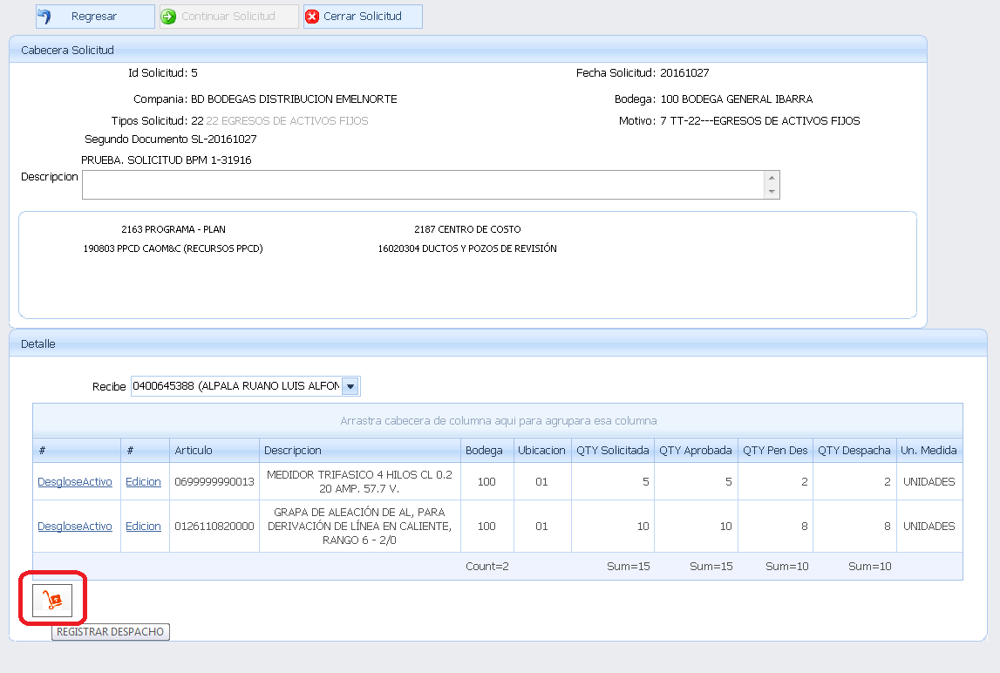
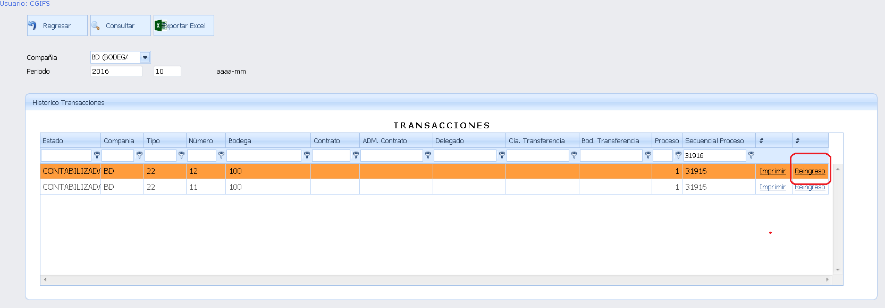

Gestión y control de medidores
Para la implementación del manejo de Medidores, es necesario tomar en consideración los subprocesos a continuación detallados:
- PARAMETRIZACION:
- Identificar los ítems que corresponden a Medidores y merecen llevar desglose (al hablar de desglose nos referimos a registrar el número de Medidor y número de Suministro).
- Definir en qué tipo(s) de transacción se requiere registrar el desglose de Medidor.
- Emitir a IT del Ecuador el listado de los ítems identificados en el punto 1 y los tipos de transacción definidos en el punto 2, para con dicha información proceder a su debida parametrización.
- EGRESO:
Como control de medidores, se tiene dos alternativas que se exponen a continuación:
- Transferencia:
- Definir y crear bodegas virtuales con el fin de identificar la responsabilidad de medidores asignados a distintos trabajadores.
- Mediante el módulo de Solicitudes, generar una solicitud de Transferencia, con el fin de identificar en que bodega virtual (Trabajador) se encuentra tal medidor.
- En este caso el trabajador tendrá a cargo una cierta cantidad de medidores que se le hayan sido asignados por Bodega.
- Una vez que se realice la instalación de un medidor, el trabajador deberá generar un egreso mediante el módulo de solicitudes, en el cual se ha desarrollado la funcionalidad para el registro del desglose (gestión que se explicara más adelante).
- Egreso:
- Mediante el módulo de bodegas, una vez finalizada la instalación del medidor generar una solicitud de egreso, para registrar el desglose del medidor (gestión de desglose se explicará más adelante).
- DESGLOSE DE MEDIDOR:
Independientemente de la alternativa para el control de medidores que se haya optado, recae en un despacho de bodega; en esta instancia, se ha habilitado la funcionalidad para el registro a detalle de los medidores.
En la pantalla para el despacho de la Fig.49, se tiene un enlace con el nombre “Desglose Activo”, al dar clic en dicha opción se presentará una pantalla para el registro del desglose de medidores.
Fig.45 Registro del desglose de medidores
Dependiendo de la cantidad a despachar, se deberá registrar los datos del número de Medidor y número de Suministro.

Fig.46 Registro de datos del número de Medidor y de Suministro
Para ingresar los datos del medidor, se debe dar clic en Editar para mostrarle una nueva ventana para el registro, según la imagen a continuación.
Fig.47 Ingreso de datos del medidor
De esta manera se irán registrando los datos dependiendo la cantidad que se está despachando.
Luego de terminar con el registro del desglose, cerrar la sub-ventana:
Fig.48 Cierre de sub-ventana - ingreso de datos del medidor
En el caso que un ítem no se encuentre parametrizado llevar desglose, al ingresar a la sub ventana se mostrara un mensaje como el siguiente: “Ítem no parametrizado llevar Desglose”, como muestra en la Fig.49
Fig.49 Ítem no parametrizado llevar Desglose
Si se intenta generar el despacho sin la información adicional pararme trizada, el sistema emitirá una alerta similar a la imagen siguiente:
Fig.50 Alerta
Cabe indicar además que no se permite el ingreso de un número de medidor que ya se encuentre registrado.
Fig.51 Número de medidor ya registrado
Una vez registrado el desglose se procede con el registro del despacho normal, esto es presionando en el botón “Registrar Despacho”.

Fig.52 Despacho normal - Registro del despacho
Al terminar la generación del egreso se desplegará el reporte correspondiente, en el siguiente formato:
Fig.53 Reporte del despacho generado
- REINGRESO DE MEDIDOR:
En el caso de devolución de un medidor se ha habilitado la funcionalidad de Reingreso desde el módulo de Solicitudes, a continuación, se detalla el proceso:
Desde la opción “Histórico Transacciones”, ubicar el despacho generado el cual se lo desea reingresar:
Fig.54 Consulta del despacho realizado - Histórico Transacciones

Fig.55 Despacho realizado
Al dar clic en el link “Reingreso” se presentará una ventana con los datos del egreso original, en la cual se editará los datos correspondientes para el Reingreso, según se visualiza en la Fig.56
Fig.56 Datos del egreso original a editar
Luego de actualizar la información para el Reingreso, presionar en “Procesar”
Fig.57 Reingreso a procesar
Esta acción genera la transacción correspondiente al reingreso, afectando al Kardex.
Created with the Personal Edition of HelpNDoc: Free PDF documentation generator